Name: Yishan Chen; E-Mail: ychen60@wustl.edu; UID: 454874
Name: Jin Yang; E-Mail: yang.jin@wustl.edu; UID: 467527
Because people are increasingly focusing on health and they are more willing to acquire information about health and medical science in recent years. Therefore, more and more technique and computing tools are used in the field of medical science. These tools are used to visualize medical data to help the public acquire information and make decisions. Moreover, we are really interested in advancing the technique in this field. To be specific, we are willing to do research about processing medical images and data, and using machine learning algorithms to predict future results to help patients to make optimal decisions.
Motivated by our research interest, when we had a brainstorm and considered which project we would do, we decided to visualize data about health reports and medical data. We think our project would be really useful and helpful to people, because they can acquire information about health and medical data that they care about. Furthermore, these data were collected by the US government or some other authorities, so these data can be trusted by people. Therefore, when users interact with the visualization of these data, they can acquire really useful information. We think our visualization can help people make decisions to help them keep fit and healthy.
We would visualize data about total death number and 10 leading causes of death in every state in US from year 1999 to year 2016.
When I encountered my dataset, I found the data could be split into two parts, the whole US country and all states. As for data about the whole country, we could visualize data and compare the differences among total death numbers in different years, from 1999 to 2016.
The other part of data is related with the states in US; therefore, inspired by the map in studio 8, we decided to present death numbers (labeled as “All causes’ in our dataset) in every state in a US map. When we wish to visualize data about percentages, we decided to draw pie charts and radar charts. When we tried to visualize data about exact numbers, we wished to use bar charts.
We want to use our visualization method answer these questions:
(1) What are the total death numbers caused by all reasons in the whole US country;
(2) Is there any differences among death numbers caused by 10 leading causes in the whole country from 1999 to 2016
(3) Is there any differences among total death numbers in different states from 1999 to 2016;
(4) If users are interested in several states, what is the death numbers and percentages of these states from year 1999 to 2016;
(5) Is there any differences among the death numbers of 10 specific leading death reasons in different states in US;
(6) What is the main cause of people’s death in states in US.
We choose the data from www.data.gov. This dataset presents the death numbers and age-adjusted death rates for the 10 leading causes of death and all causes in every state in the United States from 1999 to 2016 (link:https://catalog.data.gov/dataset/age-adjusted-death-rates-for-the-top-10-leading-causes-of-death-united-states-2013).
Data are based on information from all resident death certificates filed in the 50 states and the District of Columbia using demographic and medical characteristics.
In general, before visualizing data from a dataset, we have to preprocess this dataset. To be specific, we have to select data that we consider as the useful information and discard data that we would not visualize.
As for the data that we would visualize in this project, since data is already well-structured, we do not expect substantial data cleanup.The only data processing we may need is to fill in missing data or data with wrong format and filter out some unnecessary data. In terms of the implementation, We will first choose a small amount (around 1000 rows) for testing, if it work well, we will then apply the whole dataset(more than 100,000 rows) to it.
When we initially looked at our dataset, these data are related to the state in US, so we gain insight about the numbers about every state in US, so we decided to draw a US map to present every state’s numbers. Then we found the data is related to the year, so we decided to present our data based on different year numbers
We divided our dataset into two parts; the first part is the data of total death numbers and death numbers caused by 10 leading causes in the whole country from year 1999 to year 2016(Total death number was labeled as “All causes” in our dataset); the second part is the data of total death numbers and death numbers caused by 10 specific leading causes in every state from year 1999 to year 2016. We tried to visualize these two parts of data respectively in order to answer our target questions.
This part presented the our basic information, the authors’ information about this website. At first, we tired to show our information in the top of every HTML page in our website, but we found it was unnecessary to show it in every HTML, so we show our information only in the first HTML page in this part.
This part presents the death numbers in the whole country and includes three graphs. In general, the page was changed much from the beginning of our project.
The first graph in this page is the bubble chart. This chart is designed to show the total exact death numbers in 18 years, from 1999 to 2016. At first, we tried to use scatter plot chart, rather then this bubble chart to achieve the same goal, but the death numbers in different years is really similar, and the radius and square of circles which presents the data of these years is really similar, so we were not satisfied with this design. Then we changed this scatter plot graph to bar chart; however, later we found we have designed tow many bar charts in our website, so we wish to changed this bar chart to other charts to show the diversity. Finally, we designed this bubble chart to show exact death numbers in different years. Finally, we added a legend for this bubble chart, so users can classify the bubbles presenting different years.
The second charts is a pie chart. When designing this graph, we wished to draw a graph to show the percentages that 10 leading causes occupy in the total death numbers, so we decided to use pie chart, because pie chart is the most frequently used to show percentages.
The third graph is a grouped bar chart. At first, we designed a steam graph, but we are not satisfied with this steam graph out of the same reason with that scatter plot. The total number of death numbers in different years is similar, so the width of my steam graph cannot charge shapely. Out of this reason, the advantages of steam graph cannot be highlighted in our design, so we changed this steam graph to a grouped bar chart. finally, we added a sort function for this chart, users can choose all causes or a leading causes to sort bars in this graph.
This part presents the death numbers in all states and contains four graphs. In generally, we did not change this page from the beginning.
The first graph is a slider that users can drag to choose years. At first, we designed a select box to achieve our goal, so users can select the number of year in the box; however, we found we have designed select boxes in the Compare State part, so we designed a slider to replace the select box in order to avoid repetition.
The second graph is a visualization of US map. We drew this graph at the beginning of our design, because we wished to show the data related to states, and we thought the visualization of a map is the optimal method to show data about states. In order to highlight the differences of data in all states, we filled states in this map with different colors.
The third graph is a horizontal bar chart. We also designed this bar chart at the beginning of our project, and we did not change this graph too much expect the change of colors and fonts in the axis. Finally, we added a filter function for this graph.
The fourth graph is a word cloud. At first, we did not design this graph; however, we added a search function for the map and the bar chart, so users have to input the name of a state, so we designed this word cloud to remind users with the name of states. To be specific, if users are not familiar with the name of states, they can input the name of a state with the help of this word cloud chart.
This part presents the data about selected states from year 1999 to year 2016, and this part contains five graphs.
The first graph is a slider. This design process and function of this slider is the same with that in the All States part.
The second part is a map, the scale of which is a little smaller than that in the All States part. We did not change this map from the beginning, but we changed the color. To be specific, we filled this map with colors which was same with the color used in the All States part, and if users select and click a state in this map, the color would not change, but text would be shown to users. In this way, users can only select one state. Later, we wished to change the function of this graph, and users can select several states; therefore, we needed to change the color of this map in order to help users to classify the status that users have selected and users have not selected. Based this rule, we changed the default color of this map to grey, and if users select and click one state, the color of this state would be changed to red.
The third part is a pie chart. We did not design this pic chart until we added function that users can selected several states in the map, so we needed a graph to show the percentage that selected states occupy in the total death number of the whole country. Finally, in order to help users understand the meaning of the number, we added a text in the middle of this pie chart.
The fourth part is a horizontal bar chart. At first, we designed a line chart, and the x axis of the chart represented the 10 leading causes and the y axis represented the death numbers, so the line would change with the change of death causes. Although the line chart can show the death numbers 10 leading causes, the aesthetic of this chart is not satisfying, because the number of causes in the x axis is small, so the change of lines is not dramatic. Line chart is normally used to show the frequent change of data, so we thought the line chart was not an optimal choice for us. After that, we changed this line chart to a bar chart in order to show the exact death numbers of 10 leading causes.
The fifth part is four liquid graphs. We did not design these graphs at the beginning; however, after completing the design of other graphs in this part, we wish to add some animations in this page, we designed these graphs. We could not add a graph for every leading cause, because if we did that, we would draw ten liquid graphs in this pages, and it would make our page crowded; on the contrary, if we only draw one liquid graph, this visualization cannot provide strong evidence to answer target question: what are the main death causes in US; therefore, we decided to select four main causes and draw four liquid graphs for these four causes.
This part presented the exact death number and percentages of ten leading causes in two selected states and years. This part contains four parts.
The first part is four select boxes and a button. At first, we did not design these elements, because we did not decide to compare data between two states. After inspiring by the assignment 2, we realized that we should explore some interesting part of our dataset, so we designed this compare function. Users can select year A and state A, year B and state B, so if we use the slider, we had to design four slider for year A, year B, state A and state B respectively; therefore, the slider is not an optimal choice in the part. We chose to draw four select boxes, rather than sliders.
The second part is two donut charts, one for data of state A in year A, and the other for data of state B in year B. At first, we wished to design a classical pie chart or donut chart, but because we had drew a classical donut chart in Whole Country part and a classical pie chart in Select States part, we decided to change the shape of this donut chart. Then we designed two different color ranges for state A and state B respectively.
The third part is two radar charts, one for data of state A in year A and the other for state B in year B. At first, this radar chart is not used in this part, and it was used in Select State part. If users click a state in the map, the radar chart would be shown to users.
The third part is a group bar chart. At first, we did not design this bar chart, because we thought we had show data in two donut charts and two radar charts in this page; however, we realized that users may wish to compare data of two selected states in one graph, then we designed a line chart, one line for state A in year A and the other for state B in year B; however, when we used two different colors to classify two line in our chart, it was a little hard for users to classify this lines, because our dark background color; therefore, we changed that line chart to this group bar chart.
In this part, we present our information in this page, and users can jump to processing book webpage for this page to look through our processing book.
Users can click the text Read Process Book to jump to process book webpage to read our process book.
In this part, we try to answer two target questions: what are the total death numbers caused by all reasons in the whole US country, and is there any differences among death numbers caused by 10 leading causes in the whole country from 1999 to 2016.
The bubble chart in this part is designed to help users to acquire information about the total death numbers caused by all reasons in the whole US country. Every circle or bubble represents the total death number in one year, and legends of this bubble chart are put in the left of the chart; therefore, if users click bubbles and legends which represent a specific year, a new pie chart would replace the old pie chart, and show data about that selected year. If users hover mouse in the bubbles, year numbers would be shown to users, so users can check the year number of these bubbles.
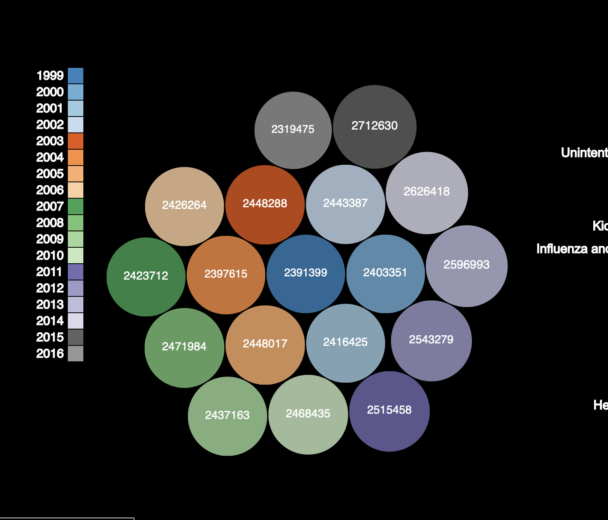The pie chart in this part is designed to show percentages that 10 leading causes occupy in the selected year. The default text in the middle of the circle is the sum of 10 leading cause deaths. If users hover mouse in the pies, the exact death number of this cause would be shown in the middle of circle.
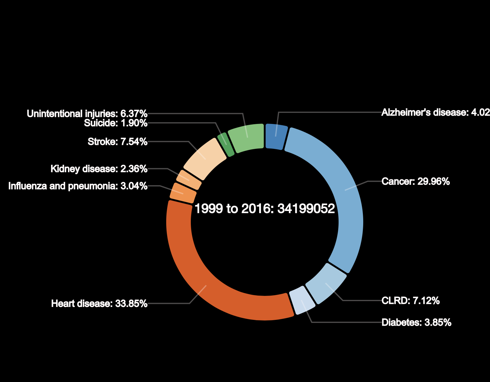The group bar chart in this part is designed to show death numbers caused by 10 leading causes from year 1999 to 2016. One large bar is made up by 11 smaller bars( 1o leading causes plus a other cause), if users hover mouse in a small bar, the exact number of this bar would be shown above the large bar. Users can also select a cause name in the radio box, and if they click button “Sort”, the large bar would be sorted by the selected cases. If users select “Total” in the radio box, the large bar would be sorted by the total death number in every year.
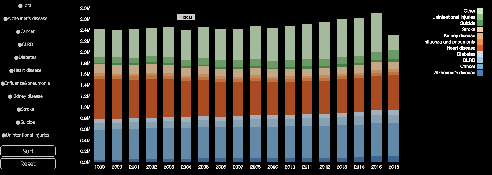In this part, we try to answer target question: is there any differences among total death numbers in different states from 1999 to 2016.
The slider is designed for users to select a year, all other charts will be changed and show data about this selected year.
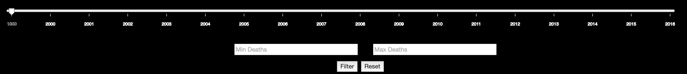 The map in this part is designed to help users acquire information about the differences of total death number among all states. The differences are classified by the classification of colors. If users hover mouse in one state, the exact number of selected state will be shown to users. If users click one state in the map, the bar which represents this state will be highlighted in the bar chart. 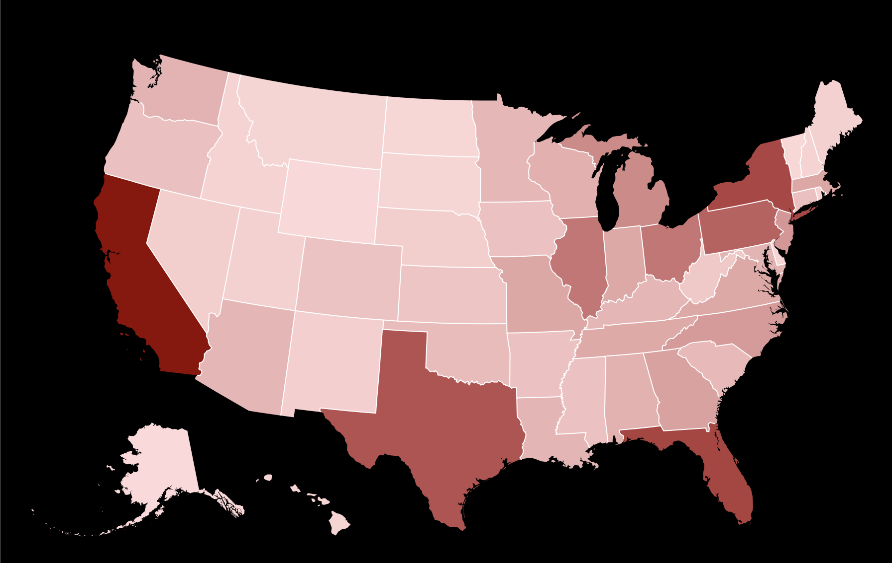The bar chart is designed to show death numbers of all states in the selected year, and these bars are sorted by the total number.
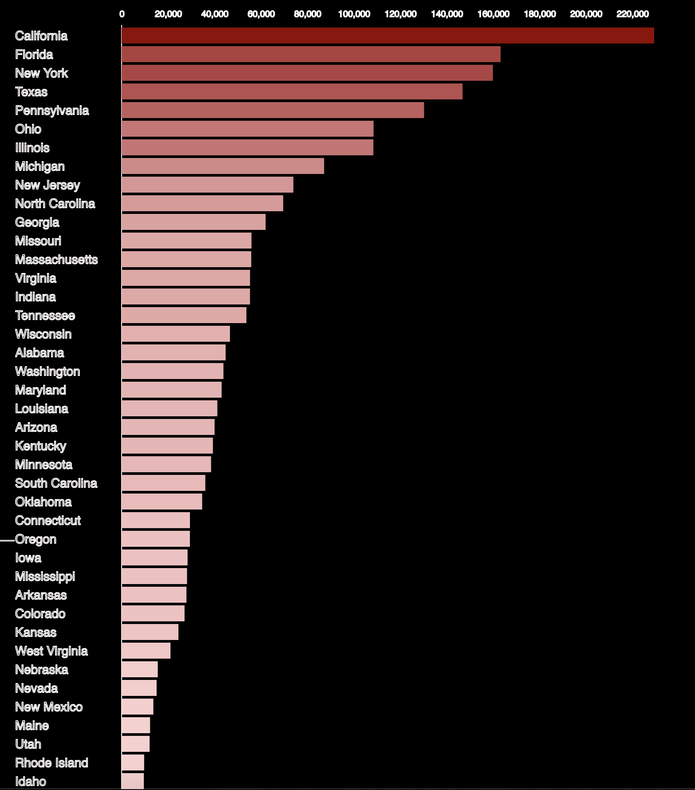Users can input minimal death number and maximal death number, and click Filter button to filter bars in the bar chart, and the bar chart will only show states whose death number if between minimal death number and maximal death number. If users click Reset, the bar chart will return to the original status and show all states.
Users can also input state name. This input state will be highlighted in the map, and bar which represents this state will also be highlighted. The word cloud in this part is designed to help users clarify the state names, and this word cloud is also a word set that users can input. Users can only input words shown in this word cloud. Moreover, the colors and font size of these words in this cloud is designed based on the death numbers of these states.
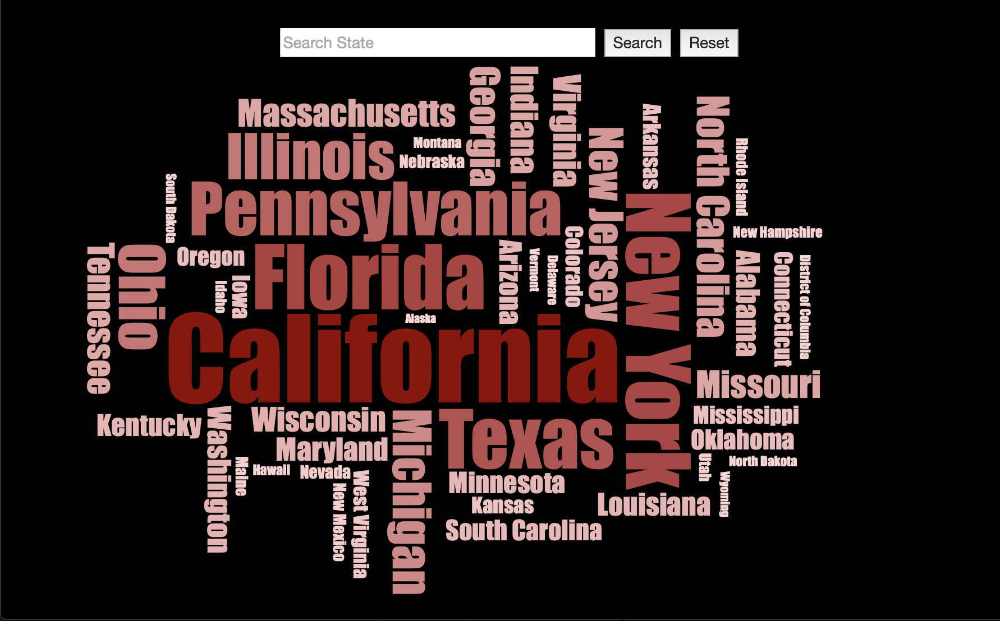In this part, we try to help users to explore our dataset by themselves. To be specific, if users are interested in several states, users can select these states and acquire information about the death numbers and percentages of these states from year 1999 to 2016.
The slider in this page is designed to for users to select a year, and then users can explore data about this selected year.
Users can select states in the map. The default color of all states in this map is grey, and after clicking one state in the map, the color of this state will be changed to red. When users select states in the map, the pie chart, the bar chart and four liquid charts will be changed and show data about these selected graphs.
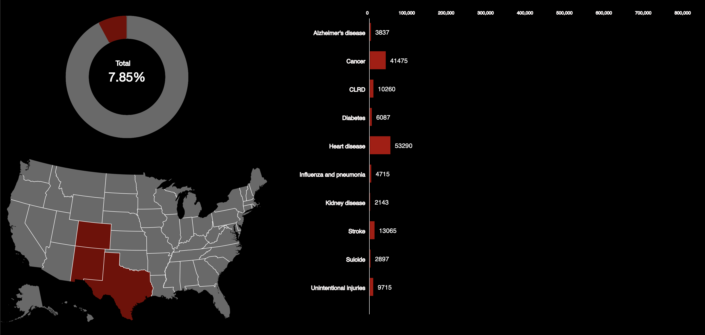The pie chart shows the percentages of total death numbers that all selected states occupy in the whole country. The bar chart shows the exact death number of 10 leading causes about selected states. Four liquid graphs show the percentages of four main causes (Heart Disease, Cancer, Diabetes, Stroke) that selected starts occupy in the whole country.
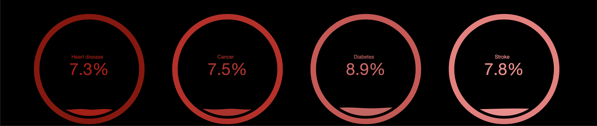Users can select two year numbers, A and B, and two state names, A and B, then click button Compare. All charts would be shown to users.
Two donut charts show users exact death number of 10 leading causes. The left shows data about state A in year A and the right one shows data about state B in year B respectively. The sums of these 10 leading cause death numbers are shown in the middle of the circle. If users hover mouse in the pies, the cause name and exact death number of this pie would be shown to users.
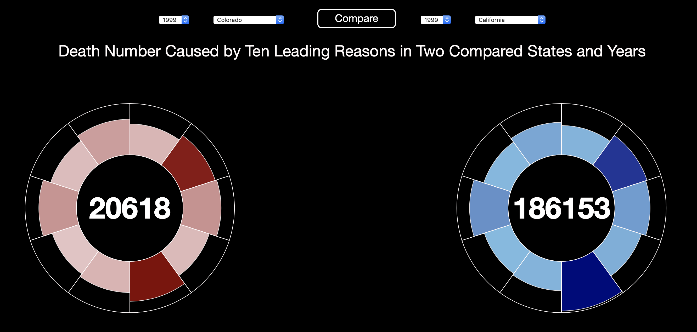Two radar charts show users percentages of death numbers that 10 leading causes occupy. The left one shows data about state A in year A, and the right one shows data about state B in year B. If users hover mouse in the white points in these two radar charts, exact percentage numbers will be shown to users.
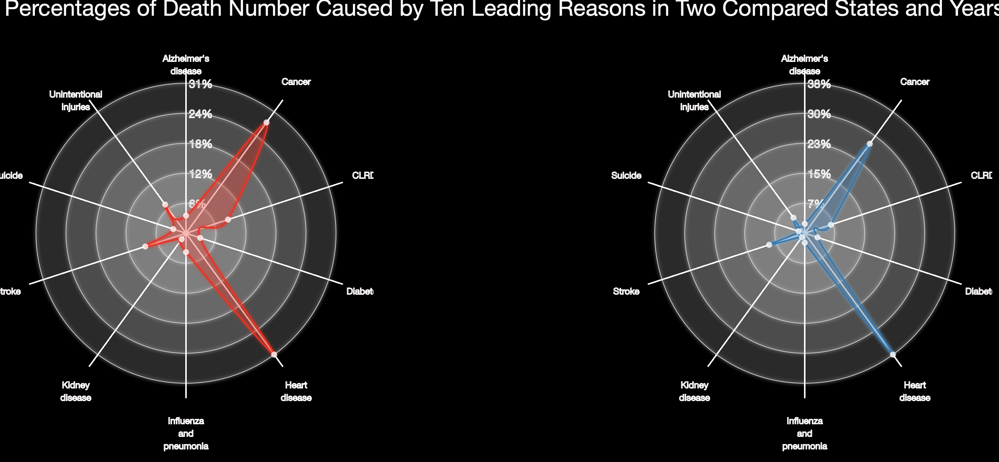The bar chart is designed to help users compare data in one graph and acquire information about exact death numbers of state A and state B.
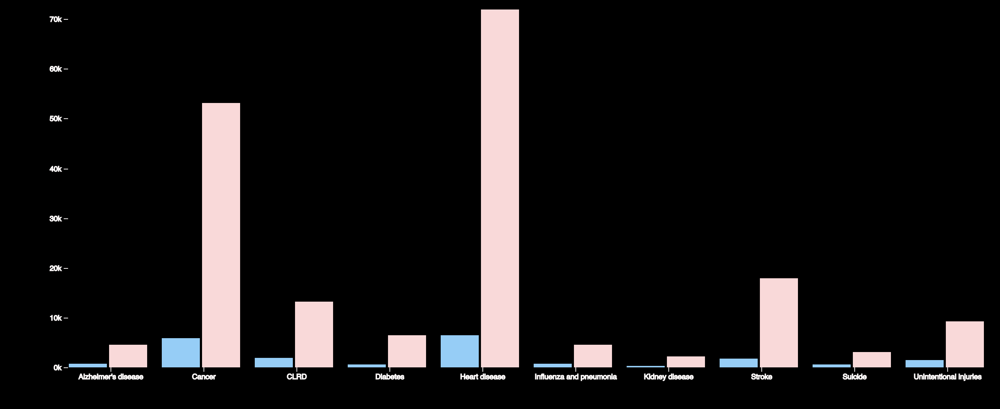We could acquire much information from our visualization tool, and our visualization tool is designed to answer our target questions.
In this part, we present our basic information and put a link to html page of our process book.
In this part, from the bubble chart, we can acquire information about the total death number in different years, from 1999 to 2016. This bubble chart can answer target questions: What are the total death numbers caused by all reasons in the whole US country. Though comparing the exact numbers and the radius of bubbles, we can acquire information about differences among different years.
From the pie chart, we can acquire information about the percentages of 10 leading causes in the selected year, so through comparing the differences among these percentages, we can know which cause is the main cause in the selected year. Through hovering mouse in the pie charts, we can acquire information about the exact numbers of 10 leading causes.
From the group bar chart, we can acquire information about the exact numbers of 10 leading causes in 18 years, so this chart can answer question: is there differences among death numbers of 10 leading causes in different years. Through sorting bars in our bar chart, we can rank the years based on the number of selected cause, so we can acquire information about the differences of the selected cause in different year.
If we select different year in the slider, we can acquire information about the differences of all states in different years, and then answer target question: Is there any differences among total death numbers in different states from 1999 to 2016.
Through comparing colors of different states in the map and bars of different states in the bar chart, we can acquire information about the difference among states in a selected year, so these charts can answer questions: is there difference of total death numbers among different States in a selected year.
Through filtering bars in the bar charts, we can select states whose death numbers lie in our interested number range.
Through inputing state names and searching states in the map and bar chart, we can explore information and data that we are really interested in.
In this part, we can select years and states that we are interested in. This part is designed to answer our target question: If users are interested in several states, what is the death numbers and percentages of these states from year 1999 to 2016, and what is the main causes in selected states.
In the slider, we can select a year number and explore data in this selected year. After selecting several states in the map, we can acquire information about the percentage of total death numbers that selected states occupy. From the bar chart, users can acquire information about the exact numbers of 10 leading causes of selected states. To explore data further, four liquid graphs are shown to help us to acquire information of percentages that 4 main causes occupy.
In this part, we can compare the exact numbers and percentages of two selected states in two selected years. This part is designed to answer target question: Is there any differences among the death numbers of 10 specific leading death reasons in different states in US.
From the donut chart, we can know the differences of exact death numbers of 10 leading causes in the selected States and years. Though comparing the radius of pies, we can acquire information about differences among these death numbers. From radar charts, we can acquire information about the percentages of 10 leading death causes in two states and two years. We compare the differences of death numbers of 10 leading causes together in the grouped bar chart.
We think our visualization excel in implementation, because we add many different kinds of interactions for users. To be specific, users can interact with our visualization tools and explore more information or acquire their interested information, therefore, users can learn our visualized data in their own way.
Another appealing part of our visualization is that we use many different colors and color scales to fill our graphs and charts, so our visualization is really eye-catching for users. When users use our visualization tools, they will not feel bored.
If we have opportunities to do further in our project, we would add data about main cities in US, such as New York, Los Angles and Chicago. Then we will explore information about the relation among these cities, and compare differences among these cities. If we could do more, we may select a most representing city from every state, so we will not only compare the differences among these states, but also compare difference among these cities. After that, we will explore the relationship between the state and its city.
In our dataset, the death number are not divided by age ranges and sex, so users can explore the data about states, years and causes. If we have more opportunities, we wish to explore data about population age ranges and sex; therefore, users can explore information about the differences among age ranges and sex.
Our visualization tool shows the difference of death numbers in different years and states, and we all know that the total population vary from state to state, so we can scale our dataset based on the total population in every state.
The bubble chart in the Whole Country part is inspired by https://beta.observablehq.com/@mbostock/d3-bubble-chart
The word cloud in the All States part is inspired by https://www.jasondavies.com/wordcloud/
The pie chart in the Whole Country part is inspired by http://bl.ocks.org/dbuezas/9306799
The radar chart in the Compare State part is inspired by http://bl.ocks.org/tpreusse/2bc99d74a461b8c0acb1.